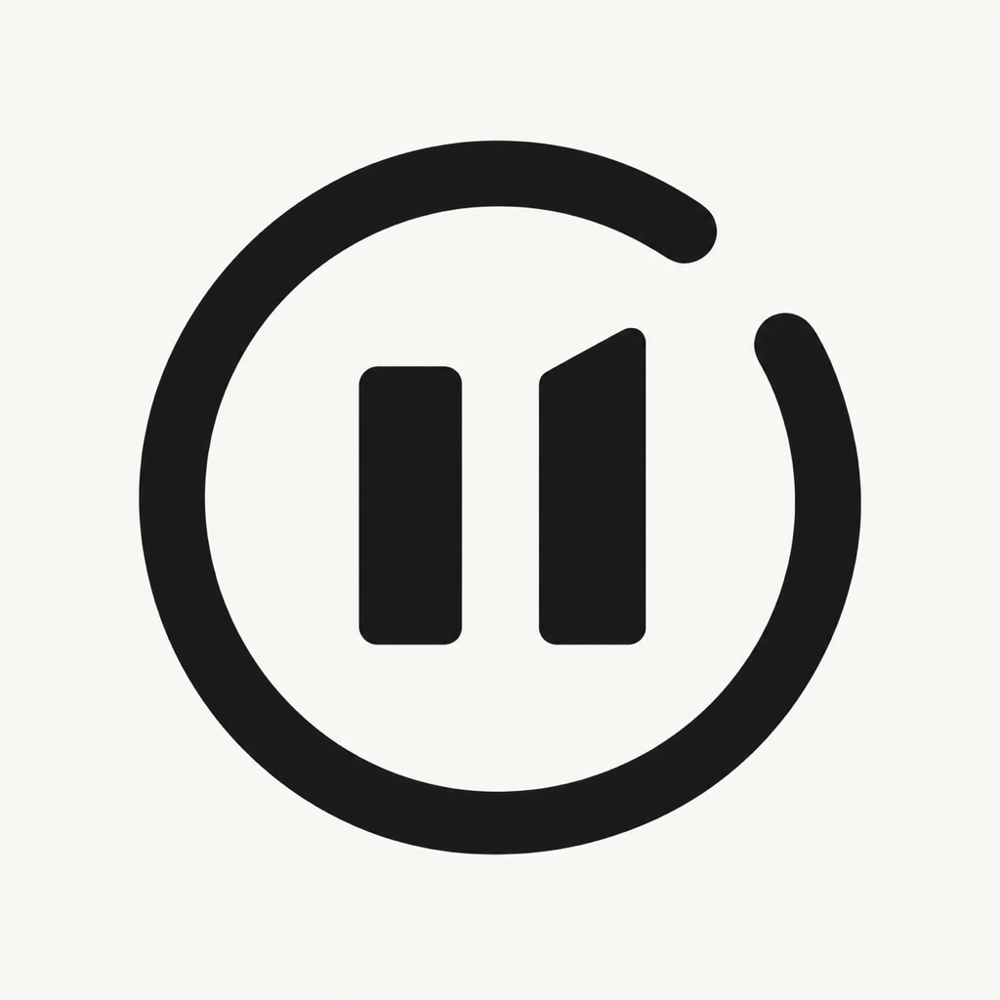
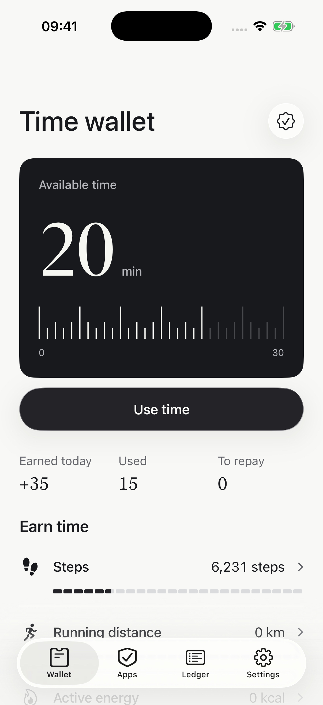
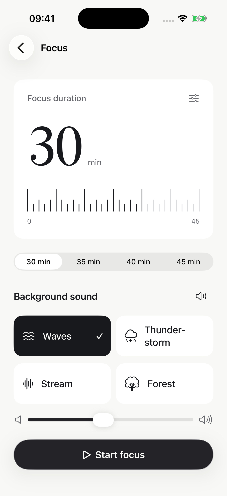
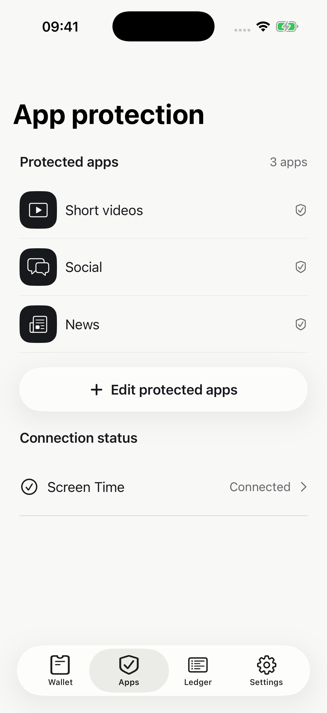
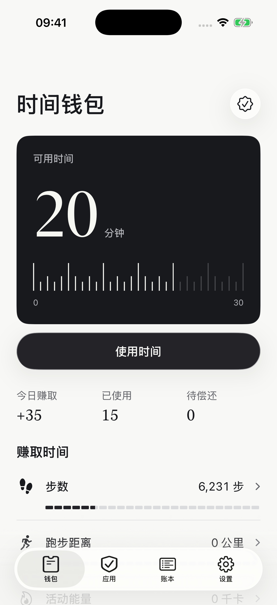
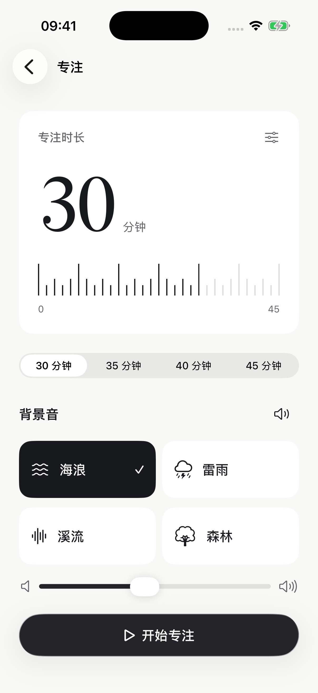
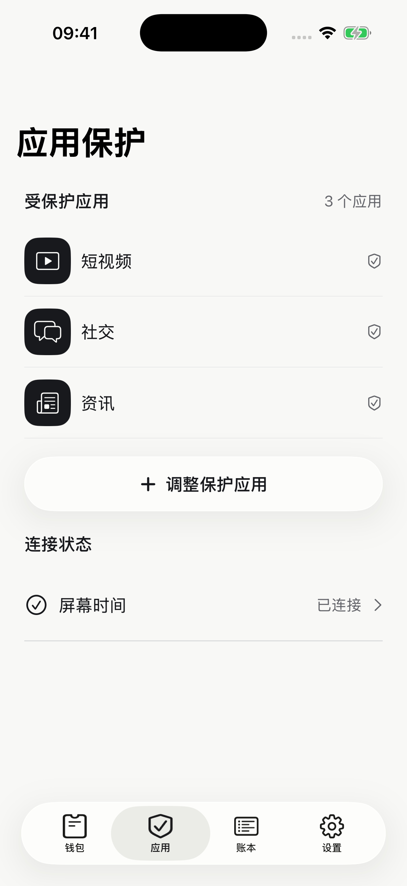

Earn screen time.
Enjoy your scroll.
Your next scroll can be a reward you plan. Walk, read or finish a focus session to earn screen time. Keep it in your time wallet, then choose how many minutes to use in the apps you protect.
Earn through steps, walking and running distance, active energy, selected reading apps or focus sessions with nature sounds. Your wallet and ledger show what you earn and use. Selected protected apps share one timed allowance. Available in English and Simplified Chinese, with light and dark appearance.



Actual app screens with fictional demonstration data.
Choose the rules for your earned time.
Using or borrowing time requires an active monthly or annual membership. Paid membership also enables custom exchange rates, daily earning limits and borrowing amounts. Apple shows any available trial, its eligibility, duration and current localized prices before purchase; trial users use the default rules. Subscriptions renew automatically unless canceled before renewal. Any free trial renews into its subscription unless canceled before it ends. Manage or cancel renewal in Apple Account subscription settings.
Your data stays on your device.
Health, Screen Time, wallet and focus records are processed on device. No advertising or third-party analytics SDK. Apple handles purchases. No TokenDance account is required. Read the full privacy policy.
Requires iOS 17 or later. Actual-usage allowances and reading monitoring require iOS 17.4 or later and Screen Time authorization. Health-based rewards require authorized Apple Health data. Selected apps share one cumulative allowance. Minutes are deducted when an allowance starts; the wallet is not a live countdown. Daily wallet balances and allowances reset. You can leave earned minutes unused.
先赚取时间，
再享受刷手机。
散一次步、读一会儿书，或完成一次专注，把日常行动变成时间钱包里的分钟数。想刷的时候，选好这次的时长，在你设置保护的应用中享受自己安排的一段休息。
通过步数、步行与跑步距离、活动能量、所选阅读应用或自然声音专注赚取时间。钱包和账本让赚取、使用与偿还清楚可见；受保护应用共享一次限时额度。支持简体中文、英文，以及浅色和深色外观。



以上为实际应用界面，数值为虚构演示数据。
为赚到的时间设置自己的规则。
使用或借用时间需要有效的月度或年度会员。付费会员还可自定义兑换比例、每日赚取上限和借用额度。可用的试用优惠、资格、时长及价格以 Apple 购买确认页面为准；试用期间使用默认规则。订阅自动续费，除非在续费前取消。免费试用如有提供，会在结束后续订为对应套餐，除非提前取消。可随时在 Apple 账户订阅设置中管理或取消续费。
数据在设备上处理。
健康、屏幕时间、钱包和专注记录在设备上处理。没有广告和第三方统计 SDK。购买由 Apple 处理。无需 TokenDance 账户。查看完整隐私政策。
需要 iOS 17 或更高版本。按实际使用量计时的额度和阅读监控需要 iOS 17.4 或更高版本及屏幕时间授权。健康奖励需要已授权的 Apple 健康数据。受保护应用共享累计使用额度。开始使用时会先扣减分钟数，钱包余额不是实时倒计时。钱包余额和额度每日重置，赚到的时间也可以不使用。